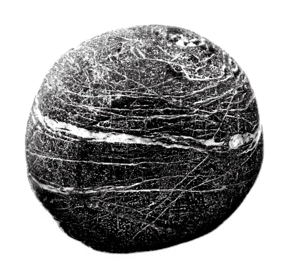

Le premier rendez-vous. Lors de la 1ère séance d’hypnose, qui dure environ 1 h 30 à 2 h, nous prenons le temps d’explorer en profondeur vos besoins et vos attentes.
Première séance · 1 h 30 à 2 h
Aurore Nussbaum
Dans ce numéro
N° 01Hypnothérapeute à PorceletteOctobre 2026

Sur rendez-vous07 81 45 23 28
Le grand entretien
Aurore Nussbaum est hypnothérapeute à Porcelette. Ici, elle raconte son approche et son chemin, avec ses mots.


Votre approche, en quelques mots ?
Ce moment est dédié à instaurer un climat de confiance et d’écoute, afin que vous vous sentiez en sécurité et à l’aise.
La séance se déroule dans une atmosphère apaisante, et vous êtes guidé progressivement vers un état de relaxation profonde, où votre esprit peut accéder à ses propres ressources pour amorcer les changements désirés tout en douceur.
Et votre chemin jusqu’ici ?
J’ai découvert un outil incroyable qui a profondément contribué à ma transformation personnelle.
Désireuse de mieux comprendre cette approche, j’ai commencé à pratiquer l’hypnose pour moi-même.
Cette expérience m’a inspirée à me former davantage afin d’accompagner les autres vers le changement et le mieux-être ; pour cela j’ai choisi l’école EHTN.
Je suis prête à vous accompagner et vous guider avec bienveillance afin que vous puissiez découvrir et libérer votre plein potentiel.
Un dernier mot ?
À l’image du cerf, avancez avec calme et assurance vers votre transformation intérieure.
La séance, du premier pas au suivi, racontée par Aurore.
Le premier rendez-vous. Lors de la 1ère séance d’hypnose, qui dure environ 1 h 30 à 2 h, nous prenons le temps d’explorer en profondeur vos besoins et vos attentes.
Première séance · 1 h 30 à 2 h
Vos objectifs. Mon objectif est de vous accompagner vers un mieux-être durable en exploitant vos ressources intérieures et en vous aidant à atteindre vos objectifs personnels.
La séance. Mon accompagnement est fondé sur la bienveillance, l’écoute et la personnalisation ; il repose sur l’hypnose ericksonienne et conversationnelle, axée sur la détente et la relaxation.
Le suivi. Les séances de suivi, d’une durée d’1 h à 1 h 30, sont spécifiquement conçues pour continuer à travailler sur vos besoins, vos objectifs et pour renforcer les changements initiés.
Séances de suivi · 1 h à 1 h 30
Séance d’hypnothérapie
60 € à 90 €
Durée 1 h 30 à 2 h, puis 1 h à 1 h 30 en suiviRèglement Espèces, chèque ou PayPalAccueil Sur rendez-vousLieu 57890 PorceletteHoraires À préciser Ici, vos jours et heures.
Quatrième de couvertureSur rendez-vous
« Chaque accompagnement est unique, adapté à votre rythme et à vos besoins. »